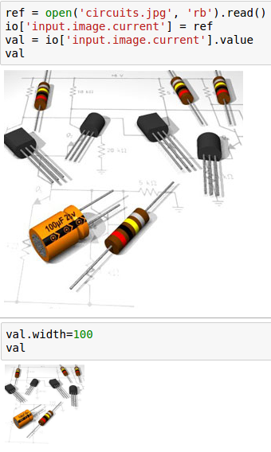

Rappture Module¶
The rappture module allows notebooks to interact with Rappture tools. It can be used to set inputs, launch tools, and visualize outputs.
Getting Started¶
You should be familiar with Rappture tools and their “tool.xml” file which specifies the inputs and outputs of tool runs.
All you need is to:
import hublib.rappture as rappture
You might also want to set either:
%matplotlib notebook
for interactive curve plots, or:
%matplotlib inline
for noninteractive plots.
Loading Rappture Tools¶
There are two ways to load a tool. If the tool is installed, you can simply do:
io = rappture.Tool("toolname")
Internally this will look for “/apps/toolname/current/rappture/tool.xml”. To load a non-current or non-installed tool, you must give the full path to the “tool.xml” file:
io = rappture.Tool("/path/to/tool.xml")
In addition to loading the xml file, the Tool() function will look for an invoke script. If one is found, it will parse the invoke script and load any modules the tool requires.
Setting Inputs¶
You can get a list of inputs and outputs (if available) by simply typing the name of the Tool object in a code cell:
io
To get just inputs, you would enter:
io.inputs()
You can get more information about a specific input by inspecting the XML representation of the inputs:
io['input.group(chirality).integer(CarbonTypeN)'].xml()
[out] <integer id="CarbonTypeN">
<about>
<label>n</label>
<description> ... </description>
</about>
<min>2</min>
<max>100</max>
<default>7</default>
<current>13</current>
</integer>
Rappture tools will use the value in the “current” node, so that is the only one our code should be setting. Set the value by using the full Rappture XML path, for example:
io['input.group(chirality).integer(CarbonTypeN).current'] = 12
io['input.group(chirality).integer(CarbonTypeN).current'].value
[out] 12
A common error was forgetting the “current” part of the path. For this reason, the set method now recognizes when a “current” node is present and will set that value instead. So the following will work:
io['input.group(chirality).integer(CarbonTypeN)'] = 7
print(io['input.group(chirality).integer(CarbonTypeN)'].value)
print(io['input.group(chirality).integer(CarbonTypeN).current'].value)
[out] 7
7
Using Nodes as Shortcuts¶
If you have several values to set with a common path, you can set a variable to the common path node and index from that. For example:
ch = io['input.group(chirality)']
print(ch['integer(CarbonTypeN)'].value)
print(ch['integer(CarbonTypeM)'].value)
[out] 7
0
Working with Units¶
Rappture uses its own unit system. However, those units are converted to and from Python Pint objects. You can read the docs, however the follwing examples should give you enough background to work with units.
Only Numbers have units. You should pass units and values with units as strings to the Rappture XML. When reading then, the value method will return a Python PINT object. For example:
io['input.number(abc).current'] = '100 cm'
io['input.number(abc).current'].value
[out] 1.0 meter
io['input.number(abc).current'] = '5 yards'
io['input.number(abc).current'].value
[out] 4.572 meter
You can get magnitude with the magnitude method and units with the units method. Or you can get them with the PINT methods:
io['input.number(abc).current'].value
[out] 4.572 meter
io['input.number(abc).current'].magnitude
[out] meter
val = io['input.number(abc).current'].value
print('Magnitude is', val.m, 'and units are', val.u)
[out] Magnitude is 4.572 and units are meter
To convert units, use to:
val.to('mm')
[out] 4572.0 millimeter
Running the Tool¶
When you have the inputs set, you can run the tool with a single command:
io.run(verbose=True)
When verbose is set, it will echo the command it is executing to run the tool. Verbose is False by default.
Getting the Raw Value¶
XML stores everything as strings. The value method converts those string to appropriate python types. If you want the unconverted raw string value, use the rvalue method for this:
print(io['output.curve(DOS).component.xy'].rvalue)
[out] -10.0 0.0
-9.999 0.0
-9.998 0.0
-9.997 0.0
-9.996 0.0
...
Input and Output Elements¶
boolean¶
As an input element, boolean displays a checkbox. The current value should be set to True or False.
An output element will always return a Python boolean; either True or False.
curve¶
A curve object represents a list of (x,y) data points. Curves may be members of groups, indicating they should be plotted on the same graph.
To plot an output curve, simply call plot(). However you should first set the matplotlib output to either inline or notebook. inline just writes a static image in the notebook. notebook allows some interaction (zooming and resizing) with the output. It needs to be set only once and will apply to all cells folowing it.:
%matplotlib notebook
io['output.curve(DOS)'].plot()
-
plot(single=False, ax=None)¶ Plot a curve or group of curves.
Parameters: - single (boolean) – Only plot a single curve, even if part of a group.
- ax –
Matplotlib axis.
>>> fig, axs = plt.subplots(1,2) io['output.curve(plot1)'].plot(ax=axs[0]); io['output.curve(plot2)'].plot(ax=axs[1]);
Scattterplots and styles are not yet implemented.
image¶
An image object represents some photographic image. When setting inputs, the image data must be GIF, JPEG, or PNG.
When reading, the value returned will be an Image object.
integer¶
An integer object represents an integer value with no units:
log¶
The <log> element appears in the output section. It is used to store the textual output log from a simulation.
When reading from xml, it returns a Python string.
number¶
A number object represents a real value with an optional system of units.
Unitless elements return a float. For more information about units, see Units
string¶
A string object represents a single-line or multi-line text value. When reading from xml, it returns a Python string.
structure¶
Structures can represent many different things. Currently only the molecule viewer is implemented.
-
plot() Display structure